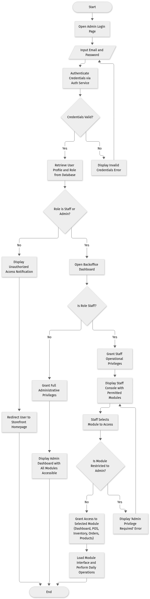
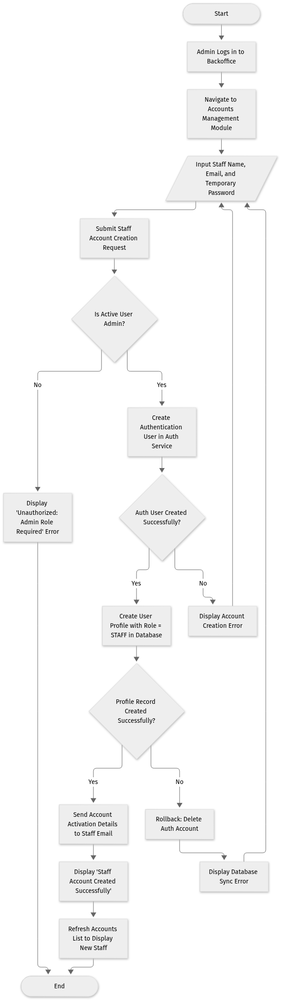
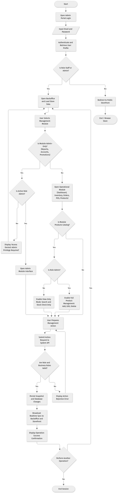

Publication-ready flowcharts updated in full compliance with the panel evaluator's red-pen annotations: all decision diamonds are strictly binary (Yes/No only), truncated text is resolved, raw code function names are replaced with systems engineering terminology, hanging branches are terminated cleanly, and figure captions match the narrative text.

Figure 4. Admin and Staff Authentication and Role-Based Access Control Flowchart of Spray & Sniff Web-Based Inventory, Sales, E-Commerce, and Customer Service System.
The Figure 4 diagram illustrates the authentication and role-based access control (RBAC) flow of the administrative portal. The process begins when an admin or staff member accesses the administrative login interface and submits their email and password. The system transmits the credentials to the authentication service for verification. If the credentials are invalid, an error message is returned and the user is prompted to re-enter their credentials. Upon successful authentication, the system retrieves the user's profile and assigned role from the database. If the user does not possess either a STAFF or ADMIN role, access is denied and the user is redirected to the public storefront homepage. If valid privileges are detected, the user enters the backoffice environment. Admin users receive full administrative privileges across all system modules. For staff users, operational privileges are granted for daily management tasks—including Dashboard, Point-of-Sale (POS), Inventory, Orders, and Products—while access to restricted administrative modules (Reports, Accounts, and Promotions) is strictly denied.


Figure 5. Admin and Staff Backoffice Operations Flowchart of Spray & Sniff Web-Based Inventory, Sales, E-Commerce, and Customer Service System.
The Figure 5 diagram illustrates the administrative and operational management process within the backoffice console. After successful authentication and authorization, the system hydrates the interface with synchronized real-time data from the store catalog, inventory records, orders, and POS transactions. When an authorized user selects a module, the system evaluates the required access tier. Restricted modules—specifically Reports, Account Management, and Promotions—require full administrator privileges; unauthorized access attempts by staff members trigger an access rejection notice. For shared operational modules, role-based controls remain active: within the Products module, administrators have full authoring capabilities (create, update, archive), whereas staff accounts are constrained to catalog browsing and stock lookups. When an action or transaction is submitted, the backend API validates role permissions and business constraints before persisting changes. Once validated, updates are committed to the database, trigger immediate cache and snapshot refreshes, and broadcast realtime updates to both the backoffice and the online storefront.

Figure 6. Customer E-Commerce Ordering and Checkout Process Flowchart of Spray & Sniff Web-Based Inventory, Sales, E-Commerce, and Customer Service System.
The Figure 6 diagram depicts the complete customer shopping and order fulfillment flow within the online storefront. Customers browse product listings, collections, and detailed fragrance profiles. Users may optionally save items to their personal wishlist or add selections directly to their shopping cart, subject to real-time inventory availability checks. When the customer initiates checkout, the system verifies authentication status; unauthenticated users are guided to sign in or register before completing their transaction. Once authenticated, shipping addresses and contact information are gathered, and the customer selects between Cash on Delivery (COD) and online card/e-wallet payment via PayMongo. Before payment execution, a final real-time stock verification ensures inventory availability. Upon verified payment confirmation, inventory records are automatically decremented, a permanent order record and timeline entry are generated, an invoice confirmation is presented, and the customer can monitor fulfillment progress through the Order History interface.